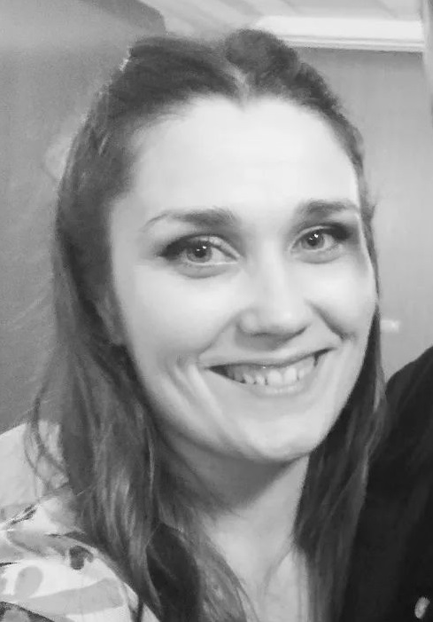

Zuzana Chovaňáková

Summary
I'm educated and responsible woman with lots of experiences with multitasking and I like to learn new things.
Education
- 2012-2015: Bachelor degree at University of Trnava (Department of Classical Archaeology)
- 2015-2017: Magister degree at University of Trnava (Department of Classical Archaeology)
- 2017-2021: PhD. degree at University of Trnava (Department of Classical Archaeology)
Work Experience
I was a student of Classical Archaeology and then I went on maternity leave till day.
My work expereinces includes Archaeological researches during studies.
I take IT courses during maternity leave and educated all the time.
Skills
- responsible
- reliable
- creative
- multitasking
About me
Contact me
My hobbies